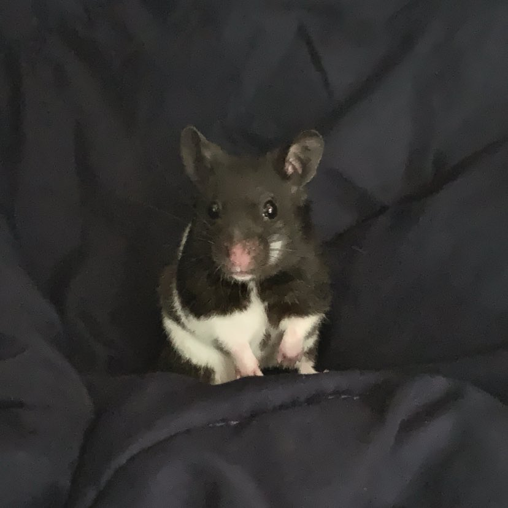

Syrian Hamsters originated from Syria. In 1930, there was a zoologist by the name of Israel Aharoni who went to Syria and bred Syrian hamsters in captivity for the first time ever. The first domesticaton of Syrian hamsters brought to the United States was in 1938. They are known to live in warm, dry habitats like sand dunes, rocky area, and steppes.
There are over twenty species of hamsters today and five out of the twenty are domesticated. Syrian hamsters' scientific name is Mesocricetus Auratus. They are the largest domesticated species. They grow up to five to seven inches long and weigh from about 120 to 200 grams. Like all hamsters, Syrian hamsters are solitary animals and are very territorial.
When bothered, nervous or afraid, a Hamster will bite you. Syrian Hamster's bites are strong and can punture the skin barrier. Syrian hamsters can also recognize voices and smells. Syrian Hamsters coems in a variety of colors and patterns. The hamster pictured on the left is a Fancy Bear Hamster.
Traits, Colors and Patterns
Syrian hamsters comes in a variety of colors and patterns. A Syrian hamster can also be either long haired or short haired, just like cats! There are five different kinds of hamsters that are differentiated in the Syrian hamster group. Based on the name, you could probably imagine how they would look like. Some Syrian hamster colors are black, cinnamon, grey, gold and so on.
Strong bonds can be formed with a Syrian hamster and its owner. They are usually easy to tame and have great temperment although, every hamster is different. Although they can create a strong bond with their owner, they often do not like being held for long periods of time as they like to exercise a lot. They can run up to five miles a day.
Hamsters have a great sense of smell. They are more prone to using their smelling senses with their whiskers and scent glands that is located by their hips. Hamsters do not have great eyesight and are nocturnal creatures. They may sleep upwards from twelve to fourteen hours a day. Out of the five domesticated hamster breeds, Syrian hamsters are the most popular species for a pet.
Oreo

My Pet Hamster Oreo
In 2021, I bought a Syrian hamster from Petco. At this time, I was very unknowledgeable about hamsters and only wanted one because my sister had some. I reckon she would've let me kept one of hers as her hamster had birthed half a dozen of babies but she lived in California.
My hamster Oreo lived for over two years. I originally wanted a different color hamster and pattern but they only had panda hamsters. I really just wanted a pet so out of the dozen of panda hamsteres there were, I picked out Oreo. You can't really see, but Oreo had a banded pattern hence the name Oreo.
I remember the first time he had escaped and I lost him for a few days. I did some research about hamsters and was very worried when I found out that they can survive up to only three or four days without food. I left his enclosure open and waited for him. At night, I woke up from something walking on me. I quickly got up and caught him, placing him back in his enclosure. But like I said, this wasn't his first time escaping... he eventually always came back.